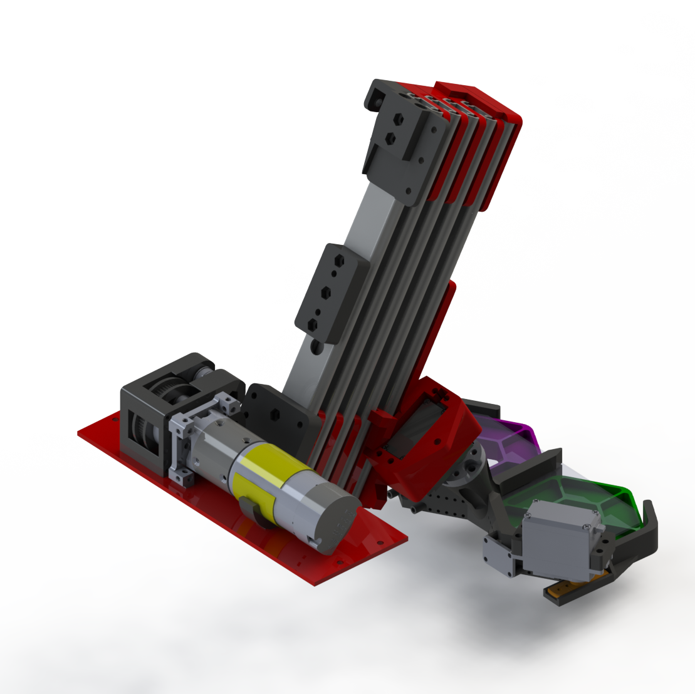

- We’re using a 5 stage belt driven lift (angled at 30 degrees) actuated by a goBilda 312 RPM motor. At the end of the lift there is a servo mounted at a 60 degree angle;
- The servo is attached to the claw and this specific pivot point allows the claw to pick up and deposit pixels from the same side of the claw.
